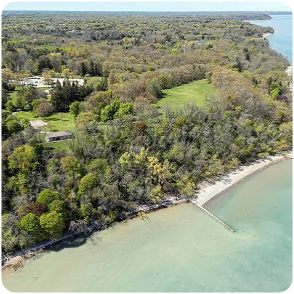
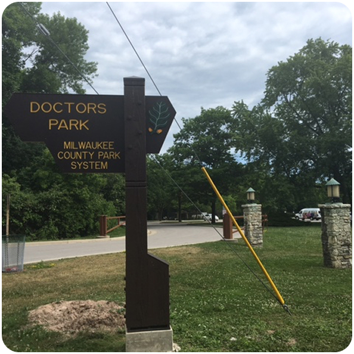
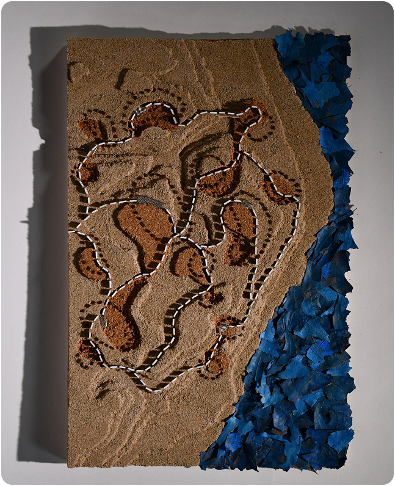
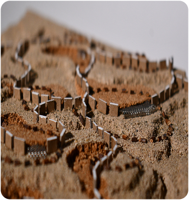

DOCTOR’S PARK
FOX POINT, WI
Doctor’s Park is a forested bluff park on Lake Michigan, part of the Milwaukee County Parks system on the border of Fox Point and Bayside. Wooded ravines run down to the shore, and the point of land inside the park gave Fox Point its name. The existing park is open and spacious with the greenery and tress surrounding the area, providing a sense of enclosure.
The park already draws walkers, families and beachgoers, but its activity is concentrated in warm weather. That is the opportunity: a building that gives people a reason to come in every season.
EXISTING SITE CONDITIONS:

The shoreline at Doctor’s Park
Trail signage at the park entrance

THE PROPOSAL

We propose a new loop trail through Doctor’s Park, with LANDFORM as its starting point and five small shelters along the way. Visitors arrive at the building and the parking lot, walk the loop through the woods and out toward Lake Michigan, and return to LANDFORM. The path and shelters give the park new places to stop and stay, and the building gives it a year-round hub.




Close-up of individual shelters
SITE MAP

Learn more about each building below:


